3D MODELING · MODELADO Y TEXTURA
ARMA
SKAYN
La guadaña Darkin de Kayn, de la referencia al render.
Recreé en 3D el arma de Snow Moon Kayn (League of Legends): una hoja de cristal azul hielo con vetas magenta, modelada pieza por pieza en Blender y pintada en Substance 3D Painter.
- SOFTWARE
- Blender 4.5 · Substance 3D Painter
- REFERENCIA
- Snow Moon Kayn · LoL
- PIEZAS
- 9 · versión low y high poly
- TEXTURAS
- 2048 × 2048

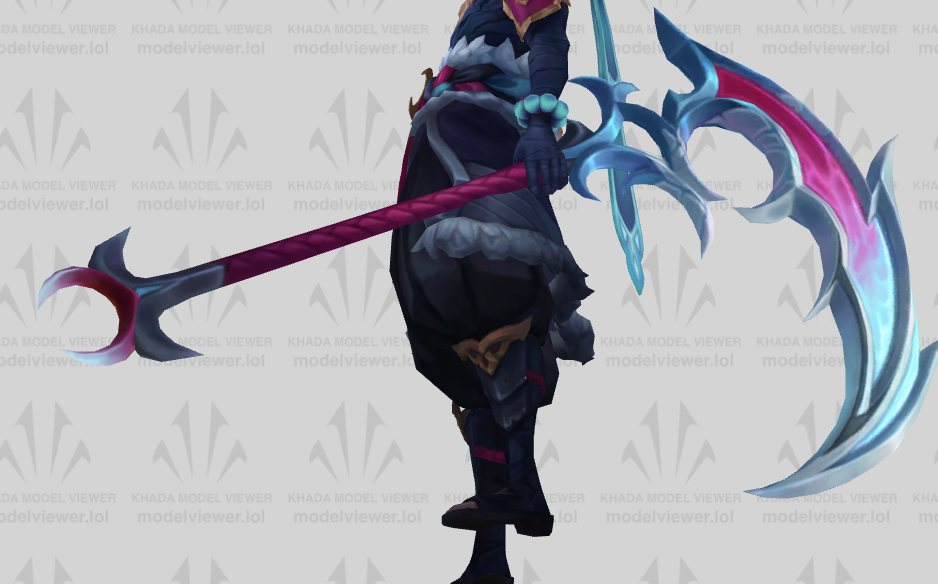
NIVEL 1 · REFERENCIA
Primero, entender el arma.
Antes de abrir Blender estudié la guadaña desde varios ángulos con el modelo del juego y un arte conceptual de la skin. Tres rasgos definían todo lo demás:
Silueta
Una hoja en media luna con picos hacia atrás y ganchos que se enroscan cerca del mango.
Material
Cristal azul hielo, casi blanco en los bordes, con una veta magenta que recorre la hoja.
Proporción
Mango largo y forrado en magenta, con un remate de púas abajo que equilibra el peso de la hoja.
NIVEL 2 · PROCESO
Doce capturas, seis días.
Del 16 al 21 de abril, contado con las capturas que fui guardando. Toca una herramienta, arrastra la barra o dale a reproducir.
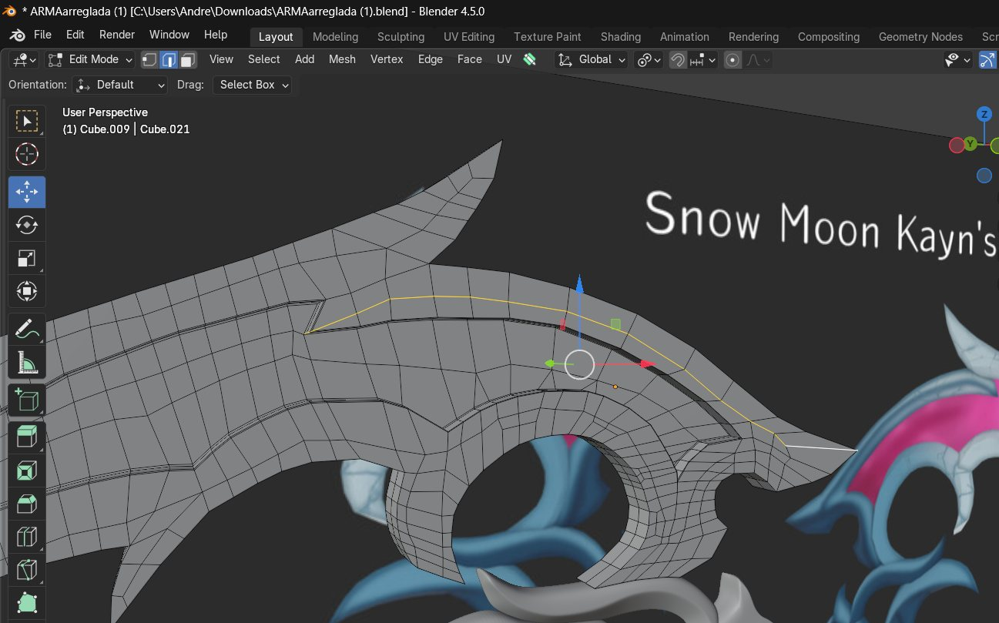
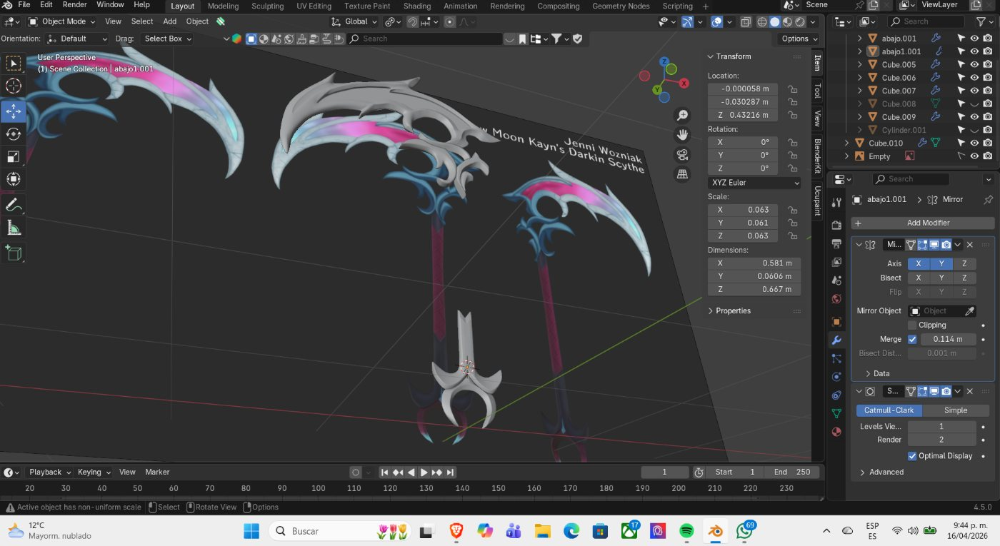
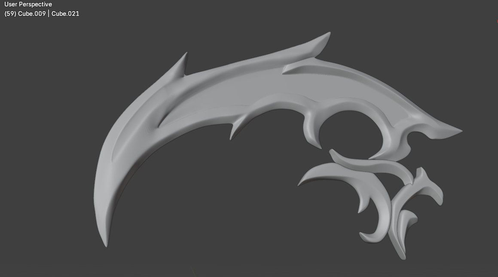
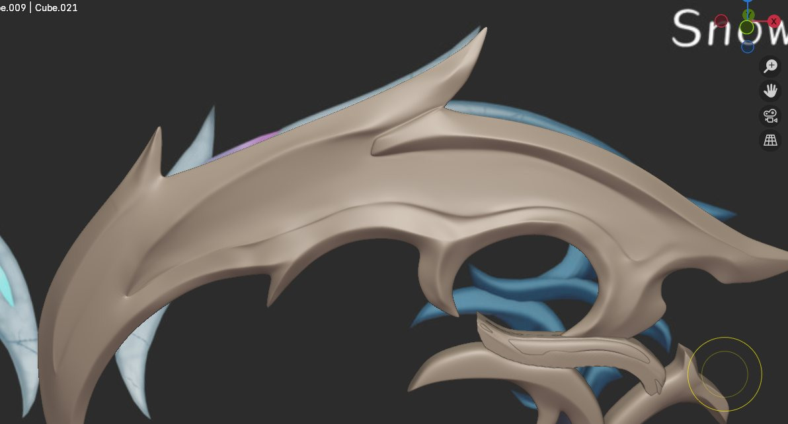
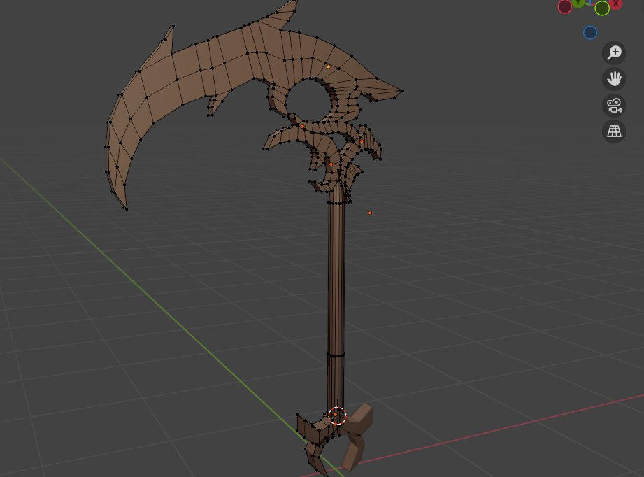
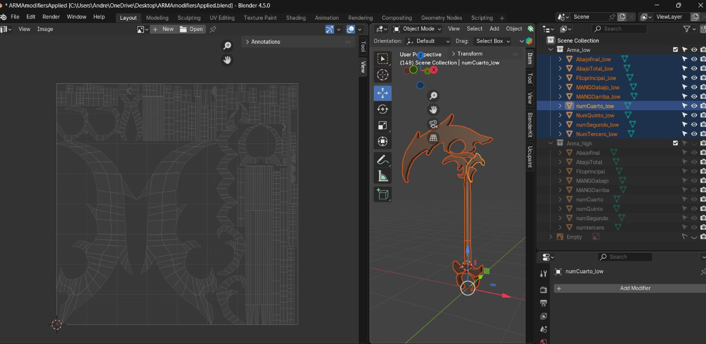
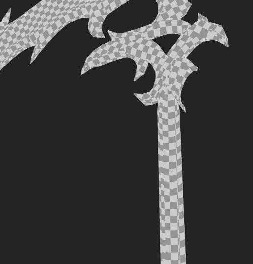
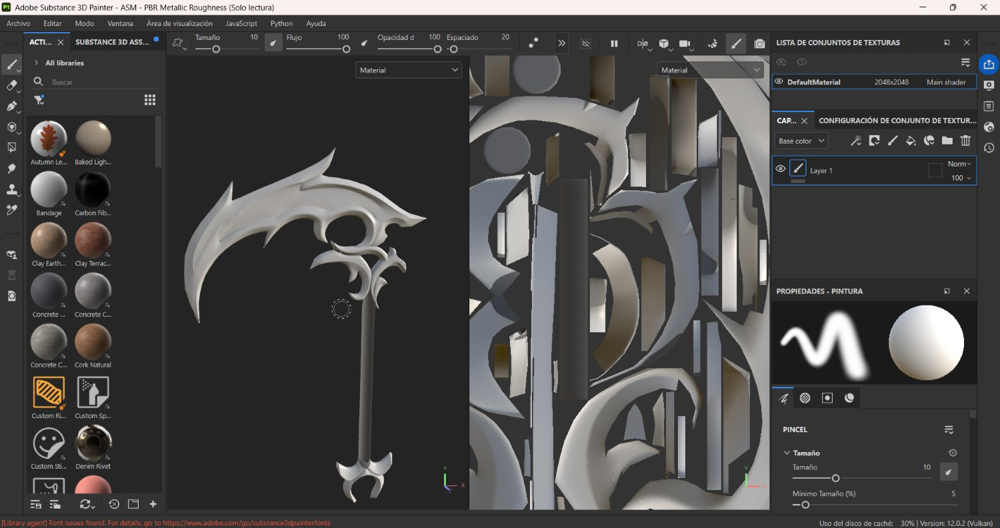
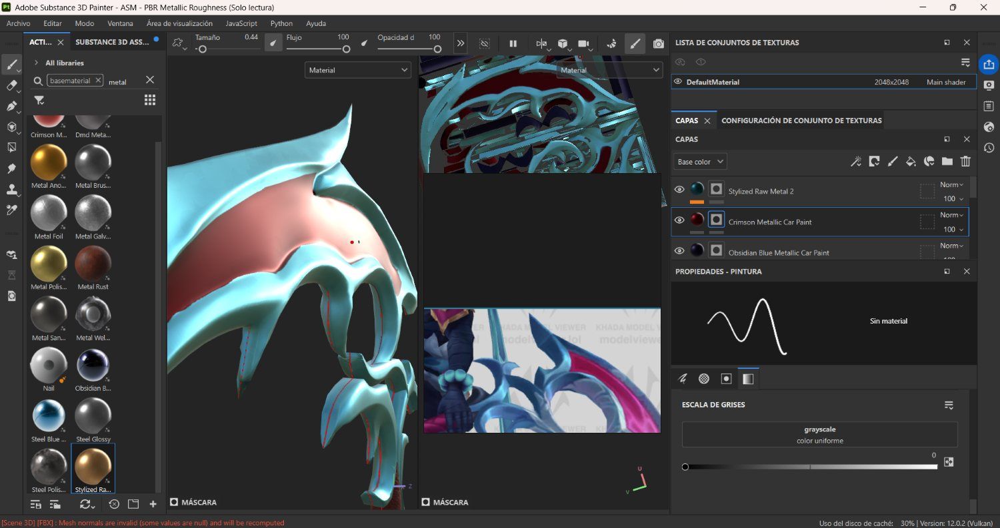
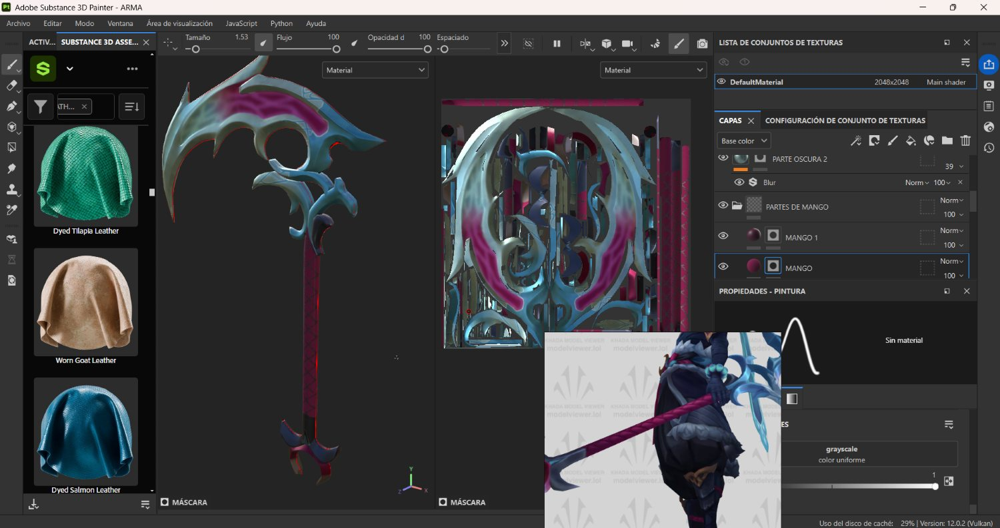
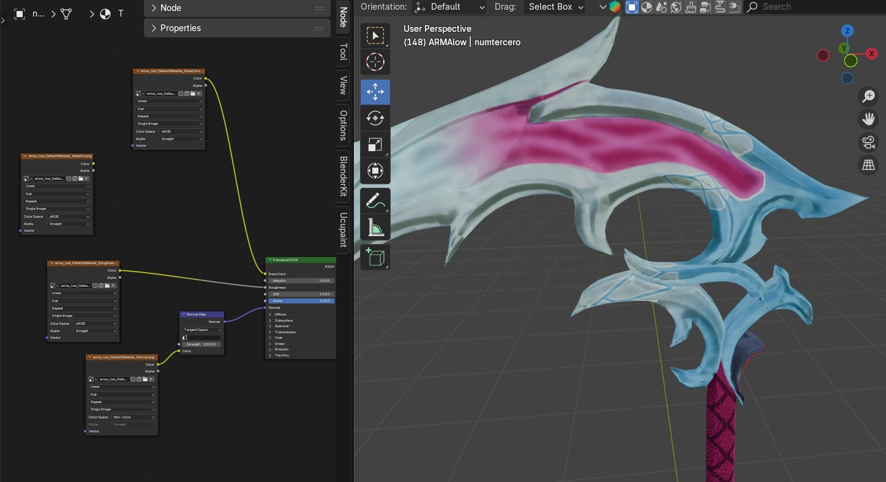
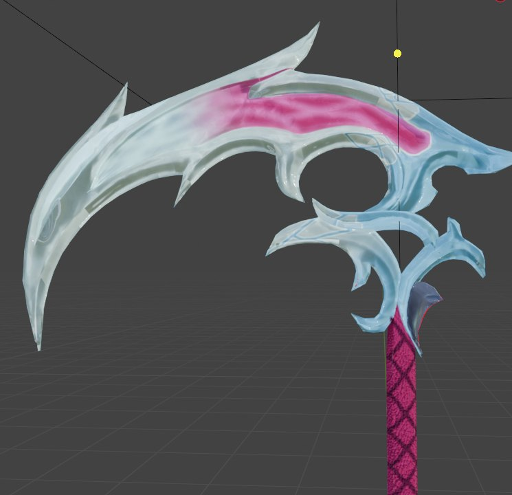
NIVEL 3 · DESPIECE
Nueve piezas, dos versiones de cada una.
El arma no es un solo objeto: está dividida en piezas con nombre propio para poder modelarlas, desplegarlas y texturizarlas por separado.
Todo el detalle: subdivisión, biseles y curvas suaves. Pesa mucho, por eso no es la versión final.
La misma pieza con pocos polígonos. En Substance recibe el detalle de la versión high horneado en sus texturas.
NIVEL 4 · TOPOLOGÍA
Bordes limpios, curvas suaves.
Para que la subdivisión no deforme la hoja, cada borde afilado necesita loops de apoyo que lo sostengan. Así los picos quedan nítidos y las curvas, suaves.
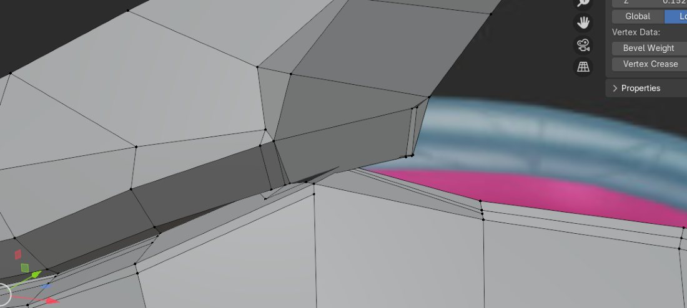
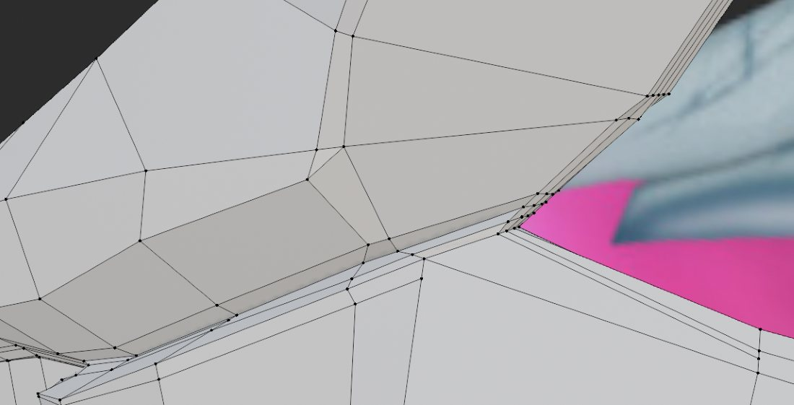
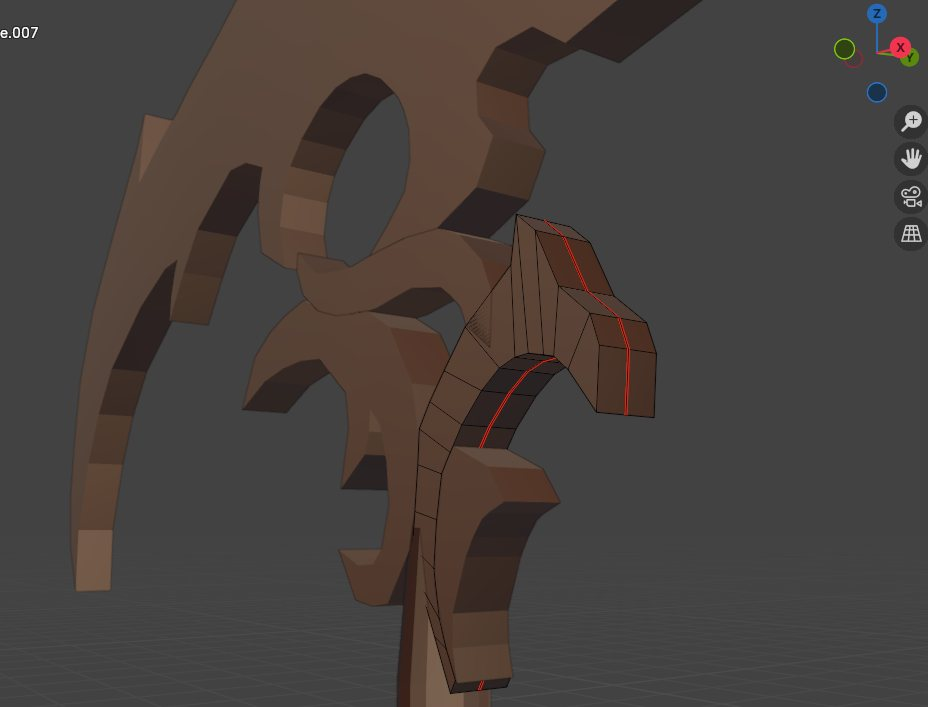
NIVEL 5 · TEXTURA
Del gris al cristal.
Arrastra el divisor para comparar el modelo recién importado en Substance 3D Painter con la textura terminada.
CAPAS · Substance 3D Painter · 2048 × 2048
PALETA DEL RENDER · extraída de la imagen final
NIVEL 6 · RESULTADO
Rhaast, listo para la pelea.
El render final en Blender, con las texturas de Substance conectadas por nodos. Usa la lupa para ver el patrón del mango y la transparencia del cristal.